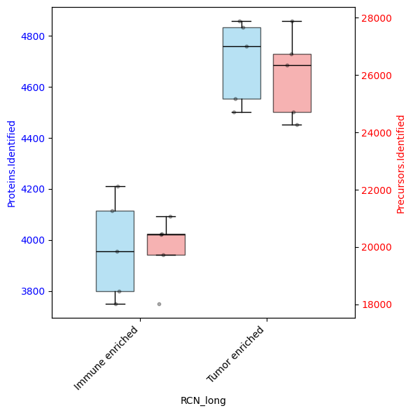
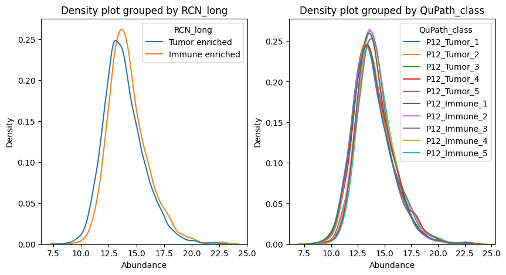
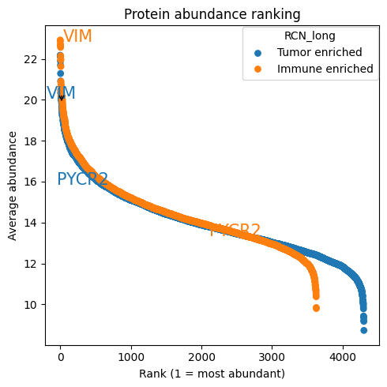
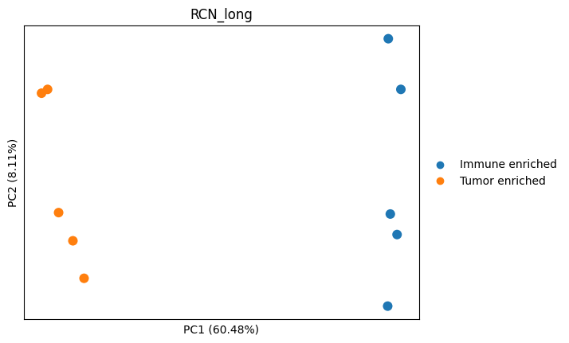
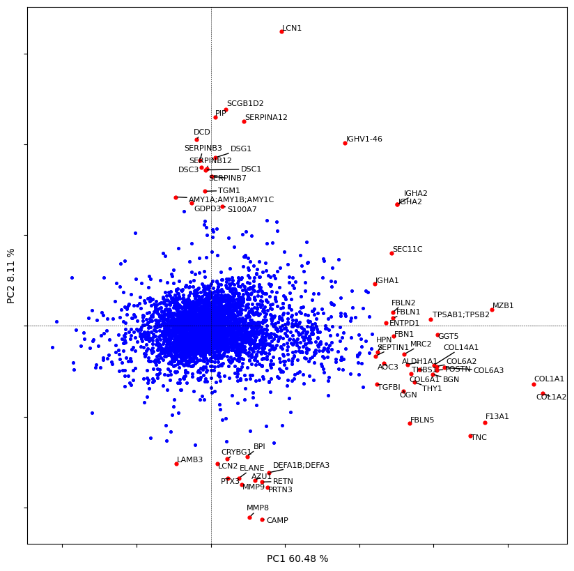
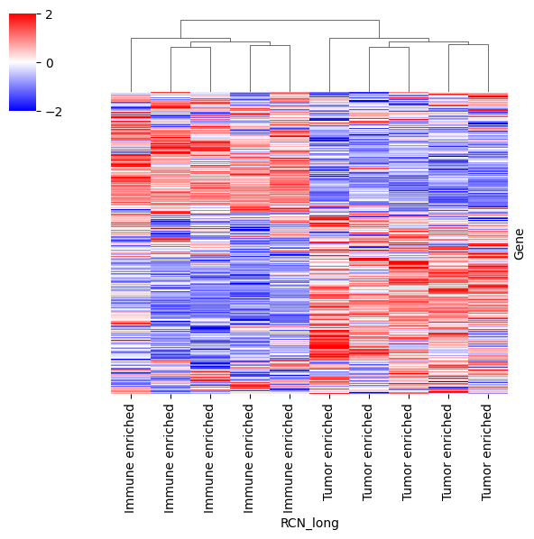
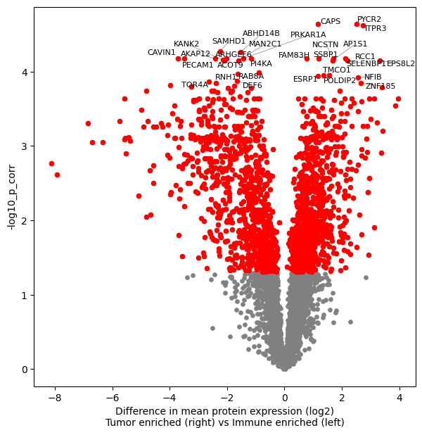

T2: Downstream Proteomics#
Analyzing downstream proteomics is fun!
In this tutorial we will show you how to take a quick look at your data, check the proteomic distributions.
Filter the dataset to remove low quality proteins, and impute the data for dimensionality reduction.
Then we perform some simple statistical test and plot it with the famous volcano plot.
Introduction#
Package import#
import opendvp as dvp
import pandas as pd
import numpy as np
import scanpy as sc
import seaborn as sns
import matplotlib.pyplot as plt
print(f"openDVP version {dvp.__version__}")
openDVP version 0.6.4
Load DIANN data into an adata object#
Mass spectrometers produce spectra of your protein fragments.
These peaks needs to be mapped to peptides from a database, and then infer the present proteins.
We use DIANN, a software tool used to streamline this process and obtain a relative quantfication of our proteins.
We now use one of the DIANN outputs, the protein group matrix (pg_matrix), to perform downstream analysis.
Therefore, our first step is to convert DIANN to adata.
adata = dvp.io.DIANN_to_adata(
DIANN_path="../data/proteomics/DIANN_pg_matrix.csv",
DIANN_sep="\t",
metadata_path="../data/proteomics/DIANN_metadata.csv",
metadata_sep=";",
n_of_protein_metadata_cols=4,
)
16:49:01.64 | INFO | Starting DIANN matrix shape (7030, 14)
16:49:01.64 | INFO | Removing 264 contaminants
16:49:01.65 | INFO | Filtering 3 genes that are NaN
16:49:01.65 | INFO | ['A0A0G2JRQ6_HUMAN', 'A0A0J9YY99_HUMAN', 'YJ005_HUMAN']
16:49:01.66 | INFO | 10 samples, and 6763 proteins
16:49:01.67 | INFO | 52 gene lists (eg 'TMA7;TMA7B') were simplified to ('TMA7').
16:49:01.67 | SUCCESS | Anndata object has been created :)
This function performs of helpful functionalities under the hood:
It removes known contaminants from your samples.
It removes any protein groups that do not have a valid gene name (NaN)
Gene strings like
'TMA7;TMA7B'are simplified toTMA7for streamlining with other tools.
Quick look at adata object#
adata
AnnData object with n_obs × n_vars = 10 × 6763
obs: 'Precursors.Identified', 'Proteins.Identified', 'Average.Missed.Tryptic.Cleavages', 'LCMS_run_id', 'RCN', 'RCN_long', 'QuPath_class'
var: 'Protein.Group', 'Protein.Names', 'Genes', 'First.Protein.Description'
# Quantification values, we can see missing values already :)
adata.X[:5, :5]
array([[ nan, 5387.49, 10755.7 , 21750.3 , 20374.3 ],
[ 9623.48, nan, nan, 8450.09, nan],
[ 8161.97, nan, nan, 14534.7 , 16192.5 ],
[ 7438.25, nan, nan, 7547.04, 13379.7 ],
[ nan, nan, 9925.7 , 19308.4 , 16956.7 ]])
# Variable metadata, in this case proteins/genes
adata.var.head()
| Protein.Group | Protein.Names | Genes | First.Protein.Description | |
|---|---|---|---|---|
| Gene | ||||
| TMA7 | A0A024R1R8;Q9Y2S6 | TMA7B_HUMAN;TMA7_HUMAN | TMA7;TMA7B | Translation machinery-associated protein 7B |
| IGLV8-61 | A0A075B6I0 | LV861_HUMAN | IGLV8-61 | Immunoglobulin lambda variable 8-61 |
| IGLV3-10 | A0A075B6K4 | LV310_HUMAN | IGLV3-10 | Immunoglobulin lambda variable 3-10 |
| IGLV3-9 | A0A075B6K5 | LV39_HUMAN | IGLV3-9 | Immunoglobulin lambda variable 3-9 |
| IGKV2-28 | A0A075B6P5;P01615 | KV228_HUMAN;KVD28_HUMAN | IGKV2-28;IGKV2D-28 | Immunoglobulin kappa variable 2-28 |
# Observations metadata, in this case each proteomic sample
adata.obs.head()
| Precursors.Identified | Proteins.Identified | Average.Missed.Tryptic.Cleavages | LCMS_run_id | RCN | RCN_long | QuPath_class | |
|---|---|---|---|---|---|---|---|
| Sample_filepath | |||||||
| Sample_1 | 26358 | 4760 | 0.139 | 8674 | RCN1 | Tumor enriched | P12_Tumor_1 |
| Sample_2 | 24705 | 4553 | 0.134 | 8452 | RCN1 | Tumor enriched | P12_Tumor_2 |
| Sample_3 | 26750 | 4835 | 0.134 | 8414 | RCN1 | Tumor enriched | P12_Tumor_3 |
| Sample_4 | 24268 | 4502 | 0.116 | 8551 | RCN1 | Tumor enriched | P12_Tumor_4 |
| Sample_5 | 27883 | 4858 | 0.136 | 8424 | RCN1 | Tumor enriched | P12_Tumor_5 |
Describing the dataset#
This dataset is a subset of the Triple Negative Breast Cancer dataset investigated in the openDVP paper.
Briefly, we performed image analysis, and based on the recurrent cellular neighborhoods(RCN) we performed our laser microddisection.
We collected samples from tumor enriched areas and immune enriched areas.
Here we explore how their proteomes differ.
adata.obs.columns
Index(['Precursors.Identified', 'Proteins.Identified',
'Average.Missed.Tryptic.Cleavages', 'LCMS_run_id', 'RCN', 'RCN_long',
'QuPath_class'],
dtype='object')
# Let's see how many proteins and precursors were measured per sample
dvp.plotting.dual_axis_boxplots(
adata=adata, feature_1="Proteins.Identified", feature_2="Precursors.Identified", group_by="RCN_long"
)

Exploring the protein quantification#
Modern mass spectrometry workflows have a dynamic range of 5 to 6 orders of magnitude.
To have a more statistically normal distribution, and have a more intuitive range of data, we use log2 transformation.
print(f"Maximum value: {np.nanmax(adata.X)}")
print(f"Minimum value: {np.nanmin(adata.X)}")
Maximum value: 11506600.0
Minimum value: 251.795
# Log2 transform the data
adata.X = np.log2(adata.X)
print(f"Maximum value: {np.nanmax(adata.X)}")
print(f"Minimum value: {np.nanmin(adata.X)}")
Maximum value: 23.45595826937909
Minimum value: 7.976105824909396
fig, axes = plt.subplots(nrows=1, ncols=2, figsize=(10, 5))
dvp.plotting.density(adata=adata, color_by="RCN_long", ax=axes[0])
dvp.plotting.density(adata=adata, color_by="QuPath_class", ax=axes[1])
plt.show()

These density graphs already show us little difference between samples, in terms of overall quantifications.
dvp.plotting.rankplot(
adata=adata, adata_obs_key="RCN_long", min_presence_fraction=0.7, proteins_to_label=["VIM", "PYCR2"]
)
16:50:41.85 | INFO | no groups passed, using ['Tumor enriched', 'Immune enriched']

Preprocess dataset#
Filter dataset by NaNs#
We expect a lot of proteins to be removed because this is a subsampled dataset.
Many protein hits were present in other groups not present here.
adata_filtered = dvp.tl.filter_features_byNaNs(adata=adata, threshold=0.7, grouping="RCN")
16:50:52.54 | INFO | Filtering protein with at least 70.0% valid values in ANY group
16:50:52.54 | INFO | Calculating overall QC metrics for all features.
16:50:52.54 | INFO | Filtering by groups, RCN: ['RCN1', 'RCN3']
16:50:52.54 | INFO | RCN1 has 5 samples
16:50:52.55 | INFO | RCN3 has 5 samples
16:50:52.55 | INFO | Keeping proteins that pass 'ANY' group criteria.
16:50:52.55 | INFO | Complete QC metrics for all initial features stored in `adata.uns['filter_features_byNaNs_qc_metrics']`.
16:50:52.56 | INFO | 4637 proteins were kept.
16:50:52.56 | INFO | 2126 proteins were removed.
16:50:52.57 | SUCCESS | filter_features_byNaNs complete.
adata_filtered.uns["filter_features_byNaNs_qc_metrics"].head()
| Protein.Group | Protein.Names | Genes | First.Protein.Description | overall_mean | overall_nan_count | overall_valid_count | overall_nan_proportions | overall_valid | RCN1_mean | ... | RCN1_nan_proportions | RCN1_valid | RCN3_mean | RCN3_nan_count | RCN3_valid_count | RCN3_nan_proportions | RCN3_valid | valid_in_all_groups | valid_in_any_group | not_valid_in_any_group | |
|---|---|---|---|---|---|---|---|---|---|---|---|---|---|---|---|---|---|---|---|---|---|
| Gene | |||||||||||||||||||||
| TMA7 | A0A024R1R8;Q9Y2S6 | TMA7B_HUMAN;TMA7_HUMAN | TMA7;TMA7B | Translation machinery-associated protein 7B | 13.391 | 5 | 5 | 0.5 | False | 13.029 | ... | 0.4 | False | 13.933 | 3 | 2 | 0.6 | False | False | False | True |
| IGLV8-61 | A0A075B6I0 | LV861_HUMAN | IGLV8-61 | Immunoglobulin lambda variable 8-61 | 13.666 | 6 | 4 | 0.6 | False | 12.395 | ... | 0.8 | False | 14.090 | 2 | 3 | 0.4 | False | False | False | True |
| IGLV3-10 | A0A075B6K4 | LV310_HUMAN | IGLV3-10 | Immunoglobulin lambda variable 3-10 | 14.216 | 6 | 4 | 0.6 | False | 13.335 | ... | 0.6 | False | 15.097 | 3 | 2 | 0.6 | False | False | False | True |
| IGLV3-9 | A0A075B6K5 | LV39_HUMAN | IGLV3-9 | Immunoglobulin lambda variable 3-9 | 15.293 | 0 | 10 | 0.0 | True | 13.680 | ... | 0.0 | True | 16.906 | 0 | 5 | 0.0 | True | True | True | False |
| IGKV2-28 | A0A075B6P5;P01615 | KV228_HUMAN;KVD28_HUMAN | IGKV2-28;IGKV2D-28 | Immunoglobulin kappa variable 2-28 | 15.343 | 1 | 9 | 0.1 | True | 14.014 | ... | 0.2 | True | 16.407 | 0 | 5 | 0.0 | True | True | True | False |
5 rows × 22 columns
adata_filtered.uns["filter_features_byNaNs_qc_metrics"].columns
Index(['Protein.Group', 'Protein.Names', 'Genes', 'First.Protein.Description',
'overall_mean', 'overall_nan_count', 'overall_valid_count',
'overall_nan_proportions', 'overall_valid', 'RCN1_mean',
'RCN1_nan_count', 'RCN1_valid_count', 'RCN1_nan_proportions',
'RCN1_valid', 'RCN3_mean', 'RCN3_nan_count', 'RCN3_valid_count',
'RCN3_nan_proportions', 'RCN3_valid', 'valid_in_all_groups',
'valid_in_any_group', 'not_valid_in_any_group'],
dtype='object')
In this dataframe, stored away in adata.uns, you can see all th qc metrics of the filtering
# Store filtered adata
dvp.io.export_adata(adata=adata_filtered, path_to_dir="../data/checkpoints", checkpoint_name="2_filtered")
16:50:58.34 | INFO | Writing h5ad
16:50:58.40 | SUCCESS | Wrote h5ad file
Imputation#
adata_imputed = dvp.tl.impute_gaussian(adata=adata_filtered, mean_shift=-1.8, std_dev_shift=0.3)
16:51:00.54 | INFO | Storing original data in `adata.layers['unimputed']`.
16:51:00.54 | INFO | Imputation with Gaussian distribution PER PROTEIN
16:51:00.55 | INFO | Mean number of missing values per sample: 572.6 out of 4637 proteins
16:51:00.55 | INFO | Mean number of missing values per protein: 1.23 out of 10 samples
16:51:02.21 | INFO | Imputation complete. QC metrics stored in `adata.uns['impute_gaussian_qc_metrics']`.
adata_imputed
AnnData object with n_obs × n_vars = 10 × 4637
obs: 'Precursors.Identified', 'Proteins.Identified', 'Average.Missed.Tryptic.Cleavages', 'LCMS_run_id', 'RCN', 'RCN_long', 'QuPath_class'
var: 'Protein.Group', 'Protein.Names', 'Genes', 'First.Protein.Description', 'mean', 'nan_proportions'
uns: 'filter_features_byNaNs_qc_metrics', 'impute_gaussian_qc_metrics'
layers: 'unimputed'
Like the previous process, the imputation stores two quality control datasets.
First, the impute_gaussian_qc_metrics
Showing you per protein:
how many values were imputed
the distribution used
the values used to impute with
adata_imputed.uns["impute_gaussian_qc_metrics"]
| n_imputed | imputation_mean | imputation_stddev | imputed_values | |
|---|---|---|---|---|
| Gene | ||||
| IGLV3-9 | 0 | 15.292778 | 1.840310 | NAN |
| IGKV2-28 | 1 | 15.343103 | 1.346909 | [13.0819] |
| IGHV3-64 | 6 | 13.710045 | 1.247562 | [11.7351, 11.3062, 11.8148, 11.6849, 12.0622, ... |
| IGKV2D-29 | 0 | 16.213394 | 1.481762 | NAN |
| IGKV1-27 | 0 | 13.452261 | 1.394043 | NAN |
| ... | ... | ... | ... | ... |
| WASF2 | 0 | 15.135411 | 0.255652 | NAN |
| MAU2 | 1 | 12.475482 | 0.455856 | [11.6512] |
| ENPP4 | 0 | 12.008373 | 0.630813 | NAN |
| MORC2 | 1 | 12.330734 | 0.783775 | [10.7016] |
| SEC23IP | 0 | 14.050191 | 0.227216 | NAN |
4637 rows × 4 columns
Second, the unimputed values are stored inside the layers compartment of the adata object.
This is a backup in case imputation has done something wrong.
You can always call those values by adata_imputed.layers['unimputed']
dvp.io.export_adata(adata=adata_imputed, path_to_dir="../data/checkpoints", checkpoint_name="3_imputed")
16:51:10.48 | INFO | Writing h5ad
16:51:10.54 | SUCCESS | Wrote h5ad file
Let’s start with the biology#
PCA (courtesy of Scanpy)#
sc.pp.pca(adata_imputed)
Scanpy is a very powerful data analysis package created for single-cell RNA sequencing.
We use it here because it is very convenient, and it already expects the AnnData format we have.
Beware of using Scanpy for proteomics datasets, assumptions will vary.
adata_imputed
AnnData object with n_obs × n_vars = 10 × 4637
obs: 'Precursors.Identified', 'Proteins.Identified', 'Average.Missed.Tryptic.Cleavages', 'LCMS_run_id', 'RCN', 'RCN_long', 'QuPath_class'
var: 'Protein.Group', 'Protein.Names', 'Genes', 'First.Protein.Description', 'mean', 'nan_proportions'
uns: 'filter_features_byNaNs_qc_metrics', 'impute_gaussian_qc_metrics', 'pca'
obsm: 'X_pca'
varm: 'PCs'
layers: 'unimputed'
# let's plot it
sc.pl.pca(adata_imputed, color="RCN_long", annotate_var_explained=True, size=300)

# let's plot the contribution of each protein to the PC1 and PC2
dvp.plotting.pca_loadings(adata_imputed)
19 [ 0.54586545 -0.69229984]
58 [0.65783205 0.95656296]

dvp.io.export_adata(adata=adata_imputed, path_to_dir="../data/checkpoints", checkpoint_name="4_pca")
16:51:23.73 | INFO | Writing h5ad
16:51:23.78 | SUCCESS | Wrote h5ad file
Protein intensities to find patterns at high level#
dataframe = pd.DataFrame(data=adata_imputed.X, columns=adata_imputed.var_names, index=adata_imputed.obs.RCN_long)
cm = sns.clustermap(data=dataframe.T, z_score=0, cmap="bwr", vmin=-2, vmax=2, yticklabels=False, figsize=(6, 6))
# to hide dendrogram of proteins
cm.ax_row_dendrogram.set_visible(False)

Differential analysis#
# ttest
adata_DAP = dvp.tl.stats_ttest(
adata_imputed, grouping="RCN_long", group1="Tumor enriched", group2="Immune enriched", FDR_threshold=0.05
)
16:51:35.87 | INFO | Using pingouin.ttest to perform unpaired two-sided t-test between Tumor enriched and Immune enriched
16:51:35.87 | INFO | Using Benjamini-Hochberg for FDR correction, with a threshold of 0.05
16:51:35.87 | INFO | The test found 2003 proteins to be significantly
adata_DAP
AnnData object with n_obs × n_vars = 10 × 4637
obs: 'Precursors.Identified', 'Proteins.Identified', 'Average.Missed.Tryptic.Cleavages', 'LCMS_run_id', 'RCN', 'RCN_long', 'QuPath_class'
var: 'Protein.Group', 'Protein.Names', 'Genes', 'First.Protein.Description', 'mean', 'nan_proportions', 't_val', 'p_val', 'mean_diff', 'sig', 'p_corr', '-log10_p_corr'
uns: 'filter_features_byNaNs_qc_metrics', 'impute_gaussian_qc_metrics', 'pca', 'RCN_long_colors'
obsm: 'X_pca'
varm: 'PCs'
layers: 'unimputed'
dvp.io.export_adata(adata=adata_DAP, path_to_dir="../data/checkpoints", checkpoint_name="5_DAP")
16:51:39.99 | INFO | Writing h5ad
16:51:40.04 | SUCCESS | Wrote h5ad file
Volcano plot#
fig, ax = plt.subplots(figsize=(7, 7))
dvp.plotting.volcano(
adata=adata_DAP,
x="mean_diff",
y="-log10_p_corr",
FDR=0.05,
significant=True,
tag_top=30,
group1="Tumor enriched",
group2="Immune enriched",
ax=ax,
)
